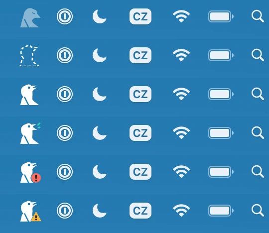
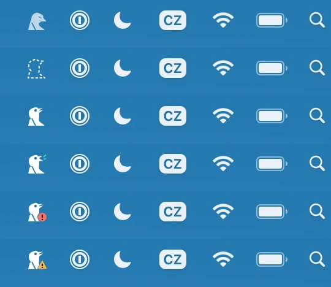
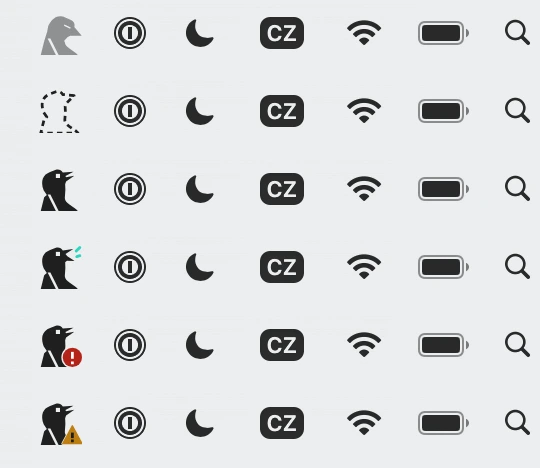
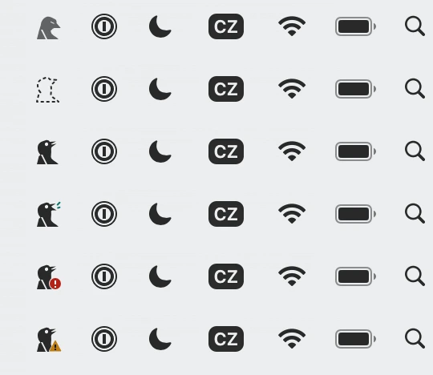
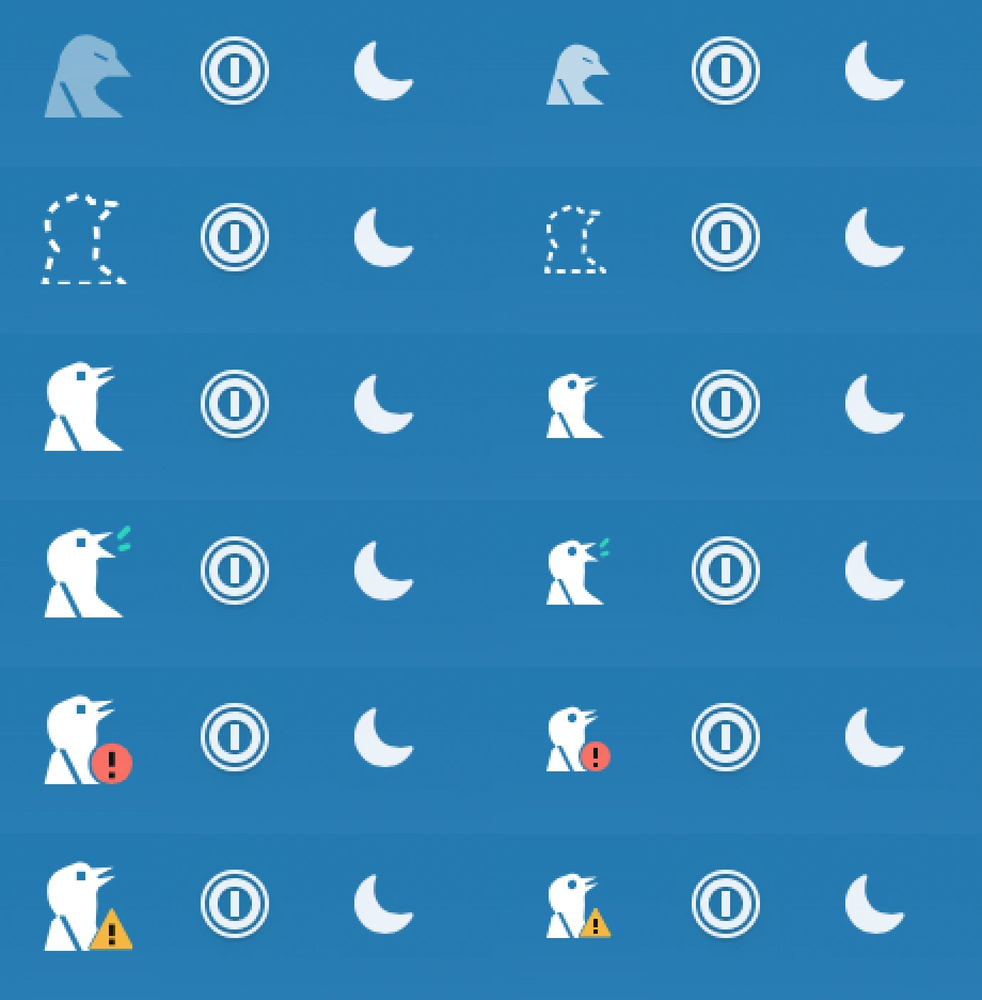
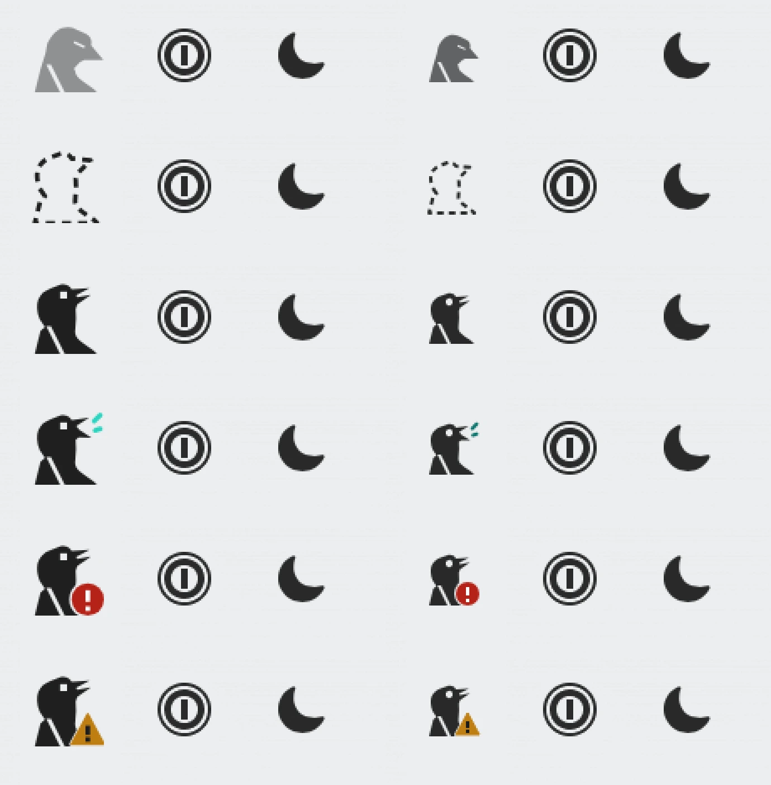
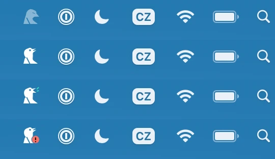
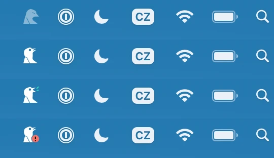
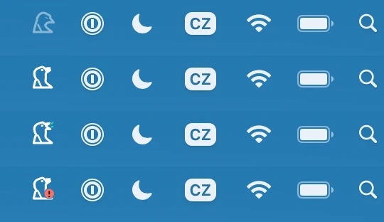

The bird in the Mac's menu bar
2026-10-25. From the owner's screenshot of macOS Tahoe's menu bar: the bird looked “large” beside the other icons, which look “smaller but very detailed”.
Why it looked large
- 22 pt, stretched. Crake gave macOS a 36 px image. The tray library shows an image's pixels as points, at most the bar's 22, so the bird was drawn at 22 pt (44 device pixels) from 36: the largest a menu bar icon may be, and soft. On the screenshot it is 39 px tall against 1Password's and the CZ input source's 32, the moon's 28 and Wi-Fi's 25.
- It filled its slot. DESIGN.md has the bird fill its square, base off the bottom edge, for Linux's bars, where icons are solid squares in 16–24 px. The Mac's neighbours are glyphs with room around them, on the bar's middle line; the bird's base sat 6 px below theirs.
- Drawn for 16 px. A Retina screen shows the square with twice the pixels, which the neighbours spend on fine lines and holes; the bird was the bold low-resolution silhouette, enlarged.
Before and after
The owner's bar, the bird replaced; top to bottom: off, connecting, listening, routed, trouble, needs you. “Before” is redrawn as macOS showed it (22 pt), “after” is tray/art.rs's Mac drawing exactly (Art::svg_mac: a 44 px image, the 32 px drawing in it 1:1 at whole pixels). Strips at the Mac's size: its pixels shown at half.




The light bar is made from the dark screenshot (its icons turned dark as macOS does over a light wallpaper). Before, on it, the call marks are the dark bar's teal, as Crake drew them (1.6:1); after, the light theme's, on every light bar.
- Size and place: 31 px of ink awake, from 1Password's top to a pixel above its base, on the neighbours' middle line. The image is the same 44 px in every state and the bird keeps its place in it, so nothing beside it moves.
- Detail: the eye a round hole, larger; the wing's cut, the parted bill, the call marks and the badges on whole pixels on a Retina screen, and on even ones, so a 1× display (which halves the image) keeps them on whole pixels too, a little softer (a drawing of its own for 1× is written down).
- Asleep: 70 % instead of 45 %: the dropped head and the shut eye say it.
- Connecting stays the lightest thing in the bar (a dashed outline, the bill shut). It's legible; if it reads too faint on a real Mac, its line can be heavier there.
Up close
Each device pixel three times; before on the left, after on the right.


Not yet: macOS colouring the bird itself
A “template” image would let macOS colour the bird for the bar over any wallpaper and dim it on an inactive display. Crake still picks white or dark itself, from dark mode. Done halfway (a template only while no coloured mark shows), the bird could change colour when the teal call or a badge comes and goes, wherever the wallpaper and dark mode disagree; done fully, Crake reads the menu bar's own appearance (the status button's) for the coloured states. That needs a real Mac to try, and is written down in docs/engineering/not-now.md.
The options shown (round one)
Mock-ups from the spec drawings, scaled: A, the same bust at the neighbours' size; C, A with a round eye and a one-pixel wing cut; B, the bird as a line. Off, listening, routed, trouble.


